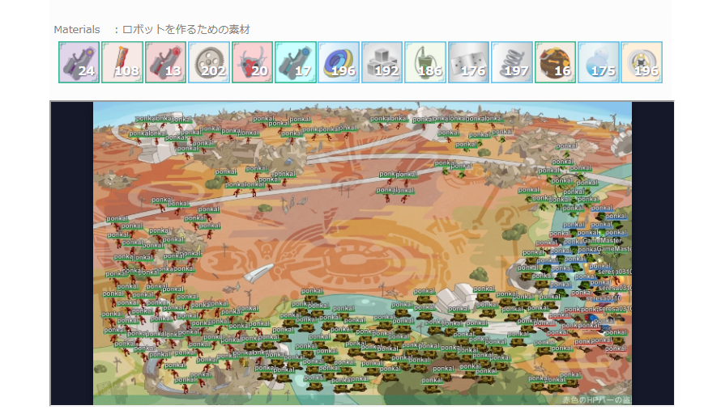

明治大学総合数理学部先端メディアサイエンス学科入学
Adseed, Inc.にて長期インターン
福地研究室本配属
Unreal Engine 4
Unity
Maya
Blender
写真を撮って時間を止めたり、写真を切って部分的に時間を動かすことで、道を作りゴールを目指すアクションパズルゲーム。 2018年度日本ゲーム大賞アマチュア部門応募用に3人で制作。 ゲームシステム部分、ビジュアルデザイン部分を主に担当。
プレイヤーは写真を撮影するキャラクター“ぱしゃ”とお化けのキャラクター“めきる”の二人を操作する。 “ぱしゃ”はマウスで操作でき、自由に画面のどこにでも写真を撮ることができる。撮ることで写真になった場所は時間が止まり、 また、撮った写真を切ると空間を切る事ができる。 例えば、写真を撮ることで物体の動きを止め橋を掛けたり、写真を切る事で都合の良い形を作ったり...
ステージに存在する物体は様々。物理挙動を行う白いオブジェクト、”めきる”が触れるとやり直しになってしまう、赤いオブジェクト、 写真で撮られた部分が固体になる水オブジェクト、物体を食べさせると一部の物体を消してくれるスイッチのような役割の食いしん坊な幽霊等。
コンテストのお題であった「うつす」からチームメンバーが発想した案から発展していった。 3DモデルやアニメーションはBlender、ゲームシステム、マテリアル等はUnrealEngine4で制作。 チュートリアルやステージセレクトを始めとするシステムやサウンドは他メンバーが制作。
ゲームのコアである写真周りやギミックの仕組みに関しては、バグが起きないような仕組みにするため細心の注意を払い制作した。 キャラクターに関しては、写真で撮影されて止まらない理由づけのためお化けっぽいキャラクターにした。ビジュアルデザインは、 プレイヤーとお化けの出会いという演出を高めるため、昼と夜が交わる、夕暮れを基軸とした。 ステージは後半32ステージを担当し、緩急ある難易度を心がけた。16ステージ毎を1サイクルとして、少しずつ難易度が上がるようデザインし、 時々、プレイヤーが飽きる事の無いように息抜き用のステージを加えた。
Close光る蜘蛛の糸で「輪」を描くことで光を作り、暗闇を照らし歩くゲーム。 第9回UE4ぷちコン用に個人制作。
プレイヤーキャラクターである蜘蛛は光る糸を出すことができ、輪を描く事で明かりを灯す事ができる。 明かりが灯してある近くでは敵の動きはゆっくりになるため、攻撃のチャンス。 ステージは一寸先の見えない暗闇なので、明かりを灯しながら進むことになるが、糸を出すには体力が必要。 ステージに落ちている宝石や敵からドロップする宝石を入手することで体力が回復できる。
また、蜘蛛らしく自在に壁や天井に張り付く事ができる。 世界に本当に光を取り戻すには、エリア毎にある光る大きな石に辿り着くことが必要。 光を灯して行く道を照らし、蜘蛛らしいアクションをしながら冒険を進めよう。
コンテストのお題であった「ループ」から、”ループ状の物体を歩く”、”円を描く”を考え、 蜘蛛が壁に張り付き自由に動き回ったり、糸を用いて円を描くゲームにしようと思い制作。 3DモデルやアニメーションはMaya、ゲームシステム、マテリアル等はUnrealEngine4で制作。 壁に張り付く仕組みに関しては、外部プラグイン「CustomGravityPlugin」を使用した。
キャラクターはプロシージャルアニメーションで制御し、歩行しながら攻撃をストレスなく行えるようにした。 また、コントローラー使用時に、攻撃用のボタンをLトリガーとRトリガーそれぞれ左ひっかき、右ひっかきに対応させ、 攻撃時にわちゃわちゃ両手でボタンを押すことで、手元でも楽しさが得られるような操作にした。
ステージは壁に張り付き飛び移る事で進めるようなパルクールアクションが行えるものを目指した。 戦闘はプレイヤーの感情の揺れ動きを大きくするために、暗闇では一方的に敵に攻撃されてしまうが、敵の攻撃を避けながら光る糸で輪を作ることで、 視界と速度の利を得て、一気に形勢逆転するようにした。
学会内チャットをゲーミフィケーションでより活発化できないかと考え制作。コメントやいいねリアクションをするとカルマがたまり、 ブロードキャストされるゲーム画面にモンスターが召喚でき、他プレイヤーと対戦ができる放置型オンライン対戦ゲーム。
エンタテインメントコンピューティング学会2017のオーガナイズドゲームという企画で研究室メンバーと企画と運営を行った。 Unity部分を担当。
ブラウザ上チャットで、コメントやいいねリアクションをして学会を盛り上げると素材や経験値が手に入る。 リアクションとは絵文字や定型文をチャット上にふわふわと浮かぶようなデータに残らないアクションであり、チャットで発言することに消極的な参加者も気軽に行えることを狙っている。 手に入った素材を組み合わせることでキャラクターを作成し、ブロードキャストされるゲーム画面に召喚できる。
召喚できるキャラクターは大きく3種類に分けられ、素材を稼働時間内生産する「発掘タイプ」、他プレイヤーからお金や素材を盗む「盗賊タイプ」、 イベントボス戦や盗賊撃退に活躍する「冒険タイプ」。また、属性体性など細かな要素も存在する。これらを上手く召喚し全キャラクターを作りあげ図鑑を完成させることが目的。
Web部分全般、キャラクターデザイン、背景デザインは他メンバーが担当。
学会期間中3日間運営も行わなければならなかったが、システムは動いていたものの学会1日目は作ったキャラクターが報酬を得る事が出来無い不具合を発生させてしまい、 最初のうちは遊んでくれた方々がこのゲームの目的を理解できないものとなってしまっていた。それでも、2日目以降は遊んでくれる方も増え、また、チャットも盛り上がった。 しかし、ゲームバランスは制作時に十分に検証できなかったため、かなり傾いたものになってしまった。
動画は開発中のもの。
Closeグランドセフトオート５やニーア オートマタから影響を受け、ゲームにおけるクロスカッティング演出の有用性を感じ、 2体のキャラクターを交互に注目することがゲームの面白さを高めるのではないかと実験するため。 正反対の動きをするキャラクターを同時操作するゲームの提案をした。 Unityにて個人製作。
上の画像のものはキャラクターを交互に操作するターン制ローグライクゲームであり、 敵の遠距離攻撃がターンにかかわらずリアルタイムに動くことでプレイヤーを焦らせ、 キャラクターを交互に素早く見ることを誘導した。
上の画像のものは正反対の行動をとるキャラクターを同時に操作する2Dアクションゲームである。 隔てられた二つの世界により、キャラクターを交互に素早く見ることを誘導。 また、ボス戦時に上下の世界反転するといった演出等が存在する。
上の画像のものは正反対の行動をとるキャラクターを同時に操作する2Dアクションゲームの発展形。 キャラクターをAnima2Dによるリギングで制御し、多くの攻撃アニメーションを作成した。 また、ボタン連打の数だけ攻撃できるシステムの追加や、二つの世界を行き来したり、二つの世界の隔て方を様々にしたりした。 必殺技を使えば、一時的に片方の世界の時間を止める事が可能。
全キャラクターの素材を作り終えたところで力尽きプロジェクト凍結...
Closeはじめて共同制作した課題成果物。 現実空間に光で物体（魔法）を描き、それを形として認識し、形に応じて対戦相手とじゃんけんのようなす くみのある対戦をするゲーム。 ゲームシステム、立体認識、3Dモデリングを担当。
物体を描いた後は詠唱フェーズとなり実際に魔法を詠唱し、また、音声解析で魔法の威力を決定する。 PCを向い合せ通信対戦することにより、相手の光の軌道を読みあうような駆け引きがポイント。
形や音声に応じて様々なエフェクトが発生する。 また、チームメンバーが専用の魔法ステッキデバイスを作成した。
ビジュアルデザインや音声解析、トラッキング、カメラ演出、サウンドなどは他のメンバーが作成。
立体認識は、分散や空洞の有無、空洞の形などをもとに判定。 ゲームデザインの背景には、テレビゲームは画面と向き合うものという定説から逸脱したものを作ってやろうと、 人と人が向き合うことがコアであるゲームを目指してみたいという私の考えがある。
Closeはじめてプログラミングして制作した課題成果物。 当時よく遊んでいたスプラトゥーンをオマージュし、鳥がふんを落とし、地面を塗りあうゲームを作成した。 3DモデルはBlender、システムはHSPを使用、個人製作。
敵のふんに当たり倒されてしまわないようにするためには高度を上げる必要があるが、 高度を上げているときはスピードダウンしてしまうといった駆け引きがある。
Close